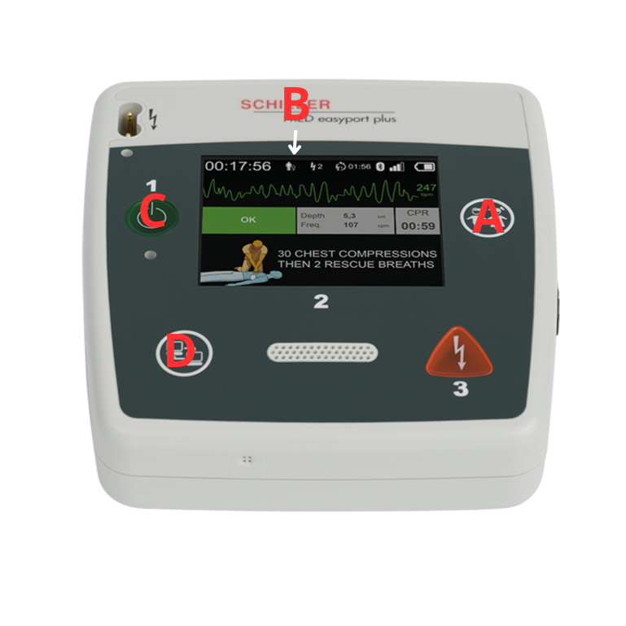

Efter användning: Självtest och återställning
När FRED easyport plus har använts, är det viktigt att apparaten återställs så den är redo för nästa insats. Följ dessa steg för att säkerställa att allt fungerar som det ska:
- Utför ett självtest: Håll in patientknappen (A) samtidigt som du slår på Apparaten (C). "Självtest" är markerat. Tryck på patientknappen Bläddra till självtest med dataknappen (D). Starta självtestet med patientknappen När du får "självtest godkänt" kan du stänga av apparaten. Statuslampan ska visa grönt när allt är OK.
- Byt elektroder: Använda eller öppnade elektroder måste ersättas med nya – även om de inte använts fullt ut.
- Kontrollera batteriet: Om batteriet visar låg nivå, byt ut det mot ett nytt. Apparaten får inte förvaras med svagt batteri.
- Kontrollera apparatens skick: Torka av och rengör ytorna om det behövs. Kontrollera att kablar och knappar är hela.
- Bekräfta att statuslampan lyser grönt: Detta innebär att enheten är redo för nästa användning.
